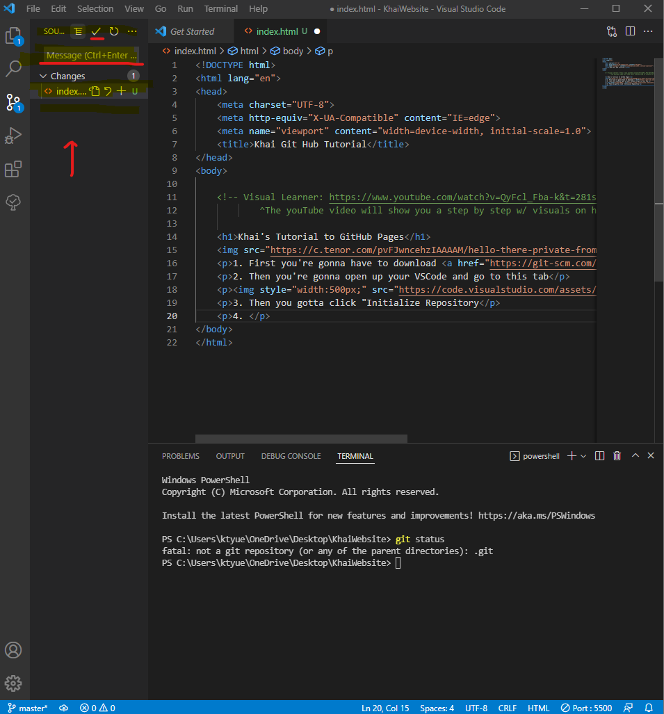
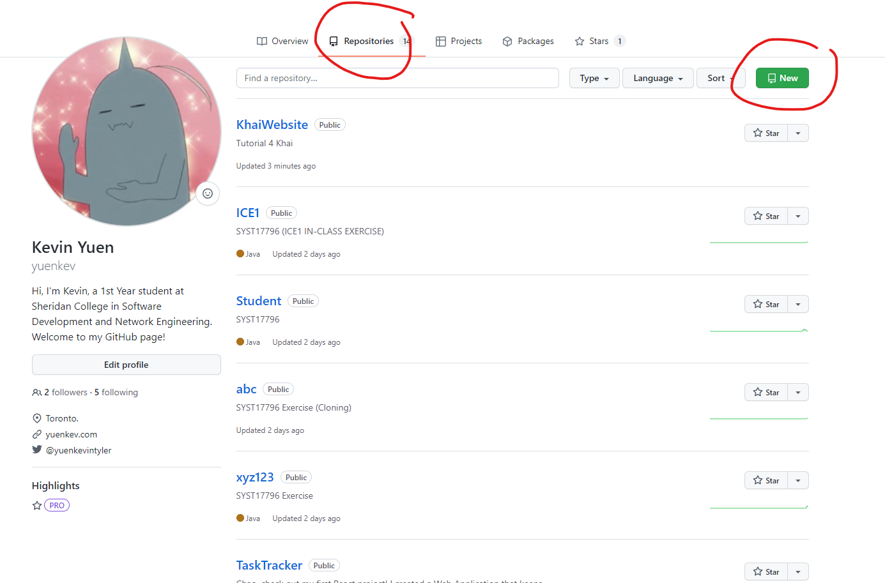
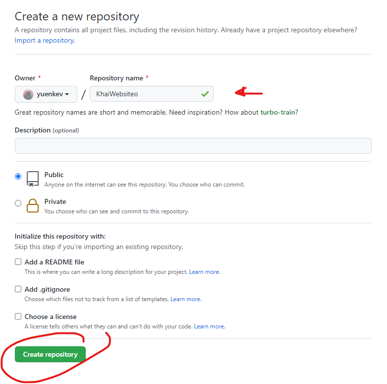
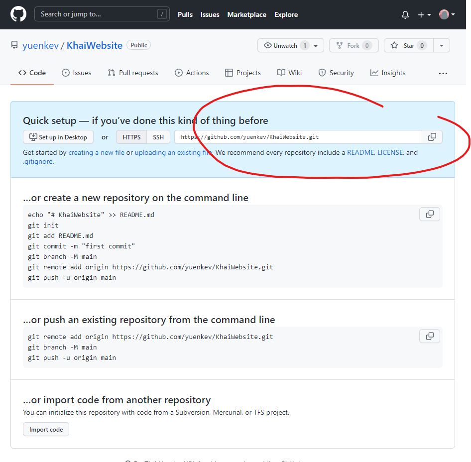
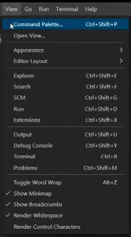
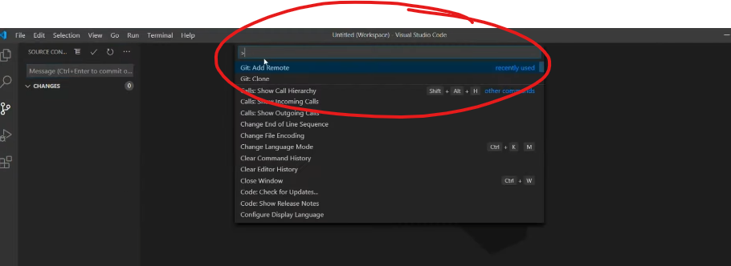

1. First you're gonna have to download git.
2. Then you're gonna open up your VSCode and go to this tab
3. Then you gotta click the "Initialize Repository" button
4. You will then have to type in the "Message" bar (shown in the picture below) a message stating what you want to save/commit (Ex. "Initial commit")
5. Once you have typed in your message you must commit (basically saving your changes) by clickin the arrow underlined in red(look @ pic above).
6. Once you commit, the files should disappear from the "Source Control" tab.
7. Then open up github a create a Repository.
 8. Then you're going to grab the copy the link they provide you with.
9. Then go to the TOP of VSCode and click the "View" tab, and then "Command Palette".
10. Then click on the command tab, and search for "Git: remote add" to add your remote Repository.
11. Once you click it, it show prompt you to enter your "Remote Name" which u can just enter ur project folder name, and a "Remote URL" which is the one URL we copied from the gitHUB website Repository.